從一罐酸種開始
酸種是一罐粉、水與微生物，先學會觀察它，再用它做麵包。
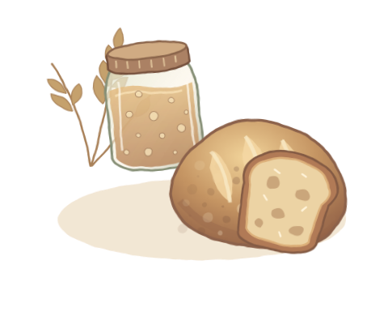
這罐叫酸種
麵粉加水後，微生物會在裡面生長。
酸種是一罐粉、水與微生物，先學會觀察它，再用它做麵包。

麵粉加水後，微生物會在裡面生長。
以 Wiki 裡的一項白小麥麵包試驗為例，先看兩款配方用什麼發酵。

用含有酵母與細菌的酸種。
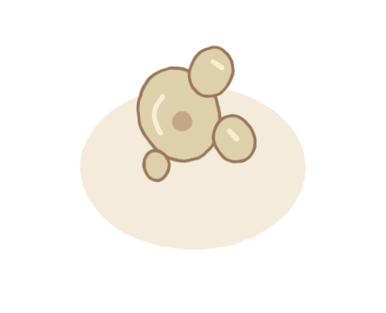
用酵母。這款是試驗中的對照麵包。
這裡先認識試驗中的兩種配方。第 15 頁再看健康證據。
微生物利用麵粉裡的糖等養分，發酵就會產生氣體和酸。

麵粉與周遭環境會帶來微生物。
糖等養分成為微生物的食物。
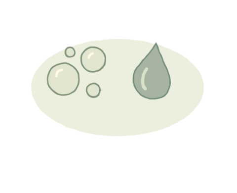
包括二氧化碳及有機酸。
用兩條線索理解發酵：氣體幫助膨脹，酸影響風味。

氣體留在麵糰裡，幫助麵糰漲大。

乳酸等有機酸會影響風味。
準備乾淨的工作區，以及能記錄餵養的工具。
先洗手，清潔容器、器具及工作檯。
自發酸種從粉水混合開始。
秤用於等重餵養，筆記用來記下起始高度。
室溫發酵時鬆蓋。
初養早期可能先漲高，再暫時停滯或回落。

實驗記錄到早期膨脹。
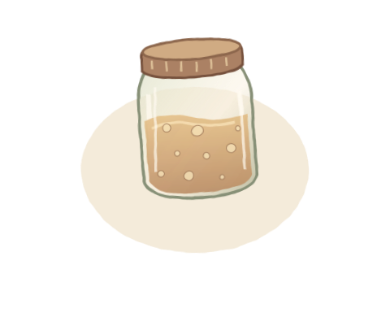
一次漲高無法辨認是哪種微生物造成。
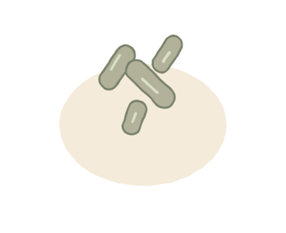
實驗後期較常見耐酸的細菌。
圖是室溫每日餵養、追蹤 14 天的實驗示意。這是該批樣本的觀察期。家中養種可觀察每罐的變化。
等重餵養例：先秤留下的酸種，再補同樣重量的粉和水。
把要繼續養的舊酸種留在罐裡。

粉和水各秤出同樣重量。
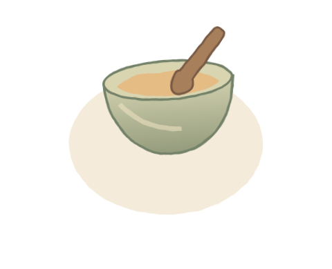
餵完記下起始高度。
若手上是已養好的冷藏酸種，可另看 W003 的冷藏保養流程。
每次餵完先標記高度，再比較氣泡、漲高與回落。

記下起始高度。
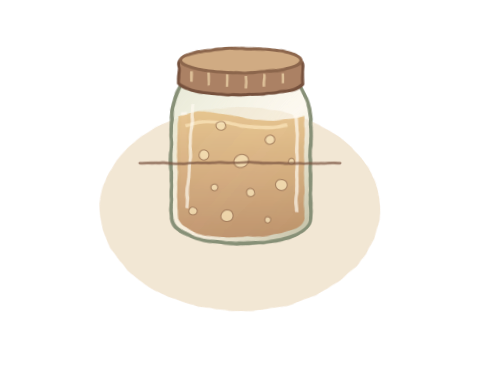
從罐側看高度和氣泡。

把變化和前幾次的紀錄一起看。
先看配方和餵養條件，才容易比較兩次發酵。
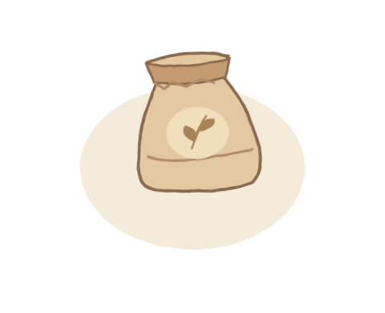
不同粉提供的養分可能不同。
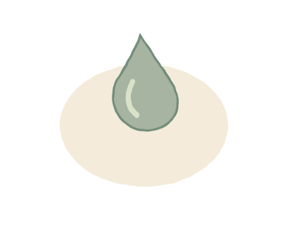
用「水重對粉重」記粉水比例。
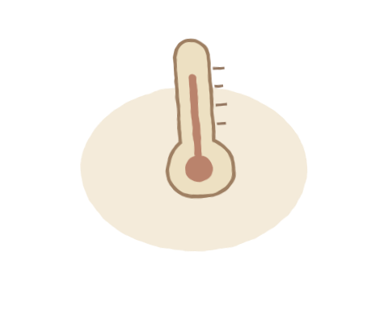
溫度影響生長與產氣，間隔會改變發酵時間。
同一試驗的條件下，不同酸種的膨脹速度和氣味表現也可不同。
先看酸種是否反覆漲高。做第一爐時，再依配方看另餵的那份。
比對多次餵養後的膨脹，觀察表現是否逐漸穩定。
酵頭是另餵、準備拌進麵糰的那一份。依本配方，室溫漲到約兩倍時使用。
先看懂三段路線，再用 Wiki 的完整用量操作。

將餵好的酵頭加水、粉和鹽，揉到柔軟。
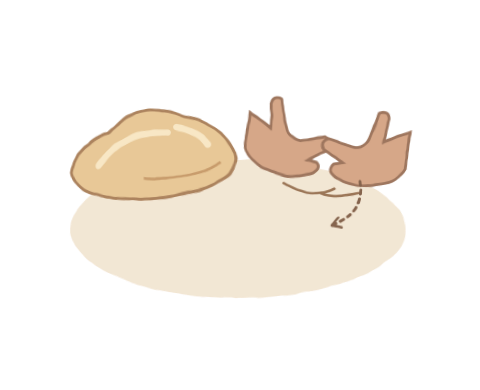
先等體積變大，再分份整形，接著最後發酵。
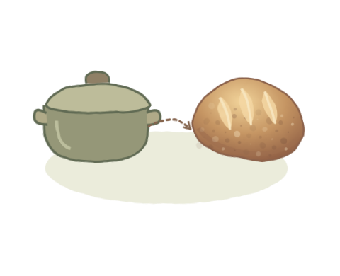
本例使用預熱的有蓋鑄鐵鍋，出爐後放網架。
第一次發酵後才整形，整形後再做最後發酵。

這個室溫配方等體積約翻倍。
分成兩等份，把邊緣收到麵糰底下。
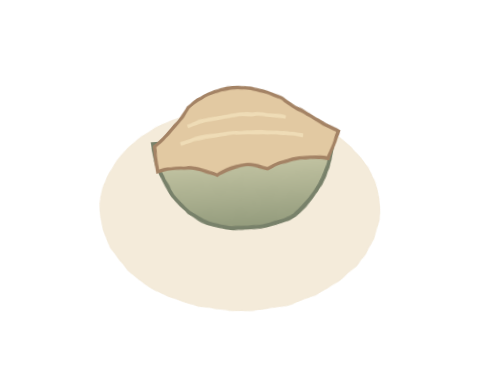
蓋好，等體積再次約翻倍。
原配方提醒，發酵時間會受海拔影響。先看體積。
這份有蓋鑄鐵鍋配方，用烤色和中心溫度觀察熟度。
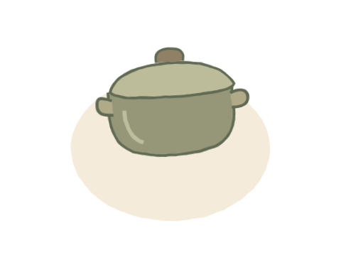
依配方劃口，戴隔熱手套把麵糰移入已預熱的鍋。

外表金黃至深褐時，用食物溫度計量中心。本配方未達約 88 °C 就繼續烤。

戴隔熱手套取出，再等麵包完全冷卻才切。
這個中心溫度是此配方的熟度指標。
漲得慢，查發酵條件。明顯發黴，丟掉全部酸種。

回查室溫、麵粉和餵養間隔。
丟掉容器內全部酸種，徹底洗淨並沖洗容器。
生酸種避免試吃。氣泡、高度和氣味只用來追蹤發酵活性。
健康證據要看研究怎麼比，麩質則要看使用的原料。

成人試驗結果不一致。要一起看用粉、製程與對照麵包。
含麩質麵粉做的酸種麵包仍含麩質，乳糜瀉患者應避開。
現有證據還無法確定單靠酸種發酵就有臨床健康效益。
下次操作時，從想解決的問題回到對應步驟。
健康證據另看用粉、製程和對照麵包。
起始高度。之後可以比較漲高與回落的情形。